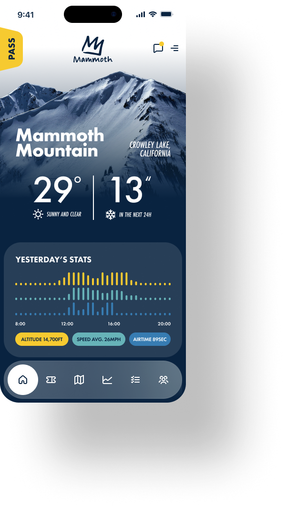
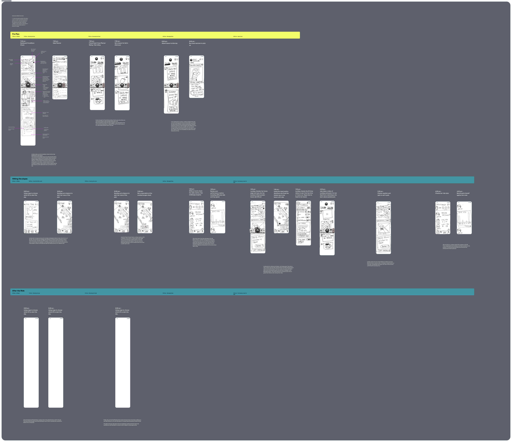
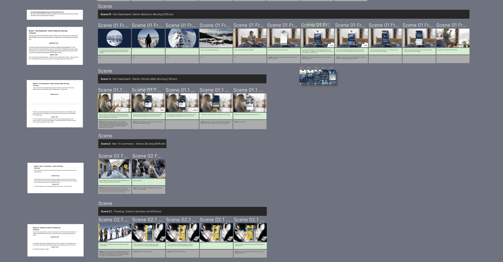
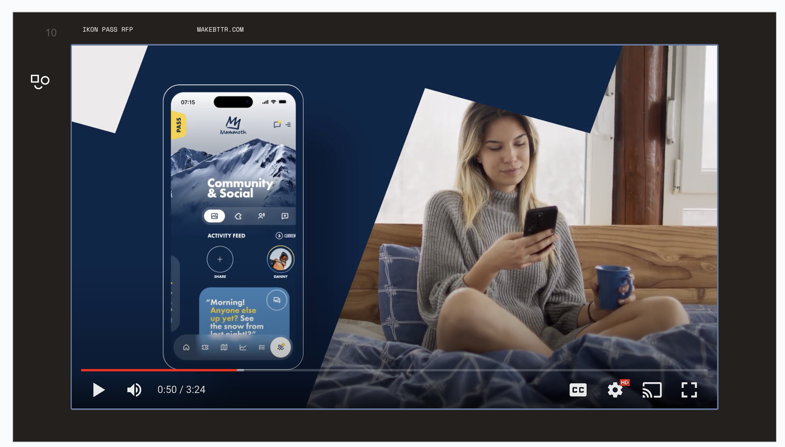
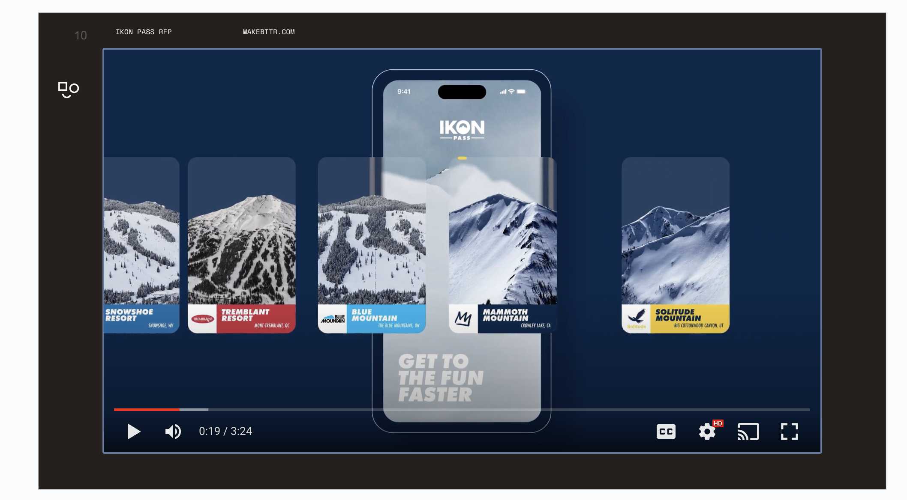

Project highlight
Alterra Pitch Work
A speculative mobile app for a mountain resort company, pitched as a film, and the pitch that won the work.

The pitch film
The quick version
A pitch has to make people feel the product before it exists. As a Sr. UX/Product Designer at Bttr, I helped answer an RFP from Alterra Mountain Company with a speculative app vision, told as a day in the life on the hill at Mammoth. We won the work.
The pitch ran in Q4 of 2023. I worked on the sketches that found the idea, the storyboards that paced the film, and the multimedia prototype that brought it to life. [Add one line on what Alterra was looking for.]
The work




The pitch deck
Flip through all 17 slides of the Ikon 2.0 deck. Use the arrows, your keyboard's left and right keys, or swipe.
What it shows
- Product vision. A day on the hill, told as a story, made the product easy to believe in.
- Fast UX thinking. [How the sketches moved quickly from idea to interface.]
- Multimedia prototyping. [How motion and sound made the concept feel real.] The result: we won the work.
Want the full story?
See a vision prototype from start to finish.
The Allē Grow case study shows how I used UX strategy and a speculative prototype to help executives, teams, and partners believe in a new product.